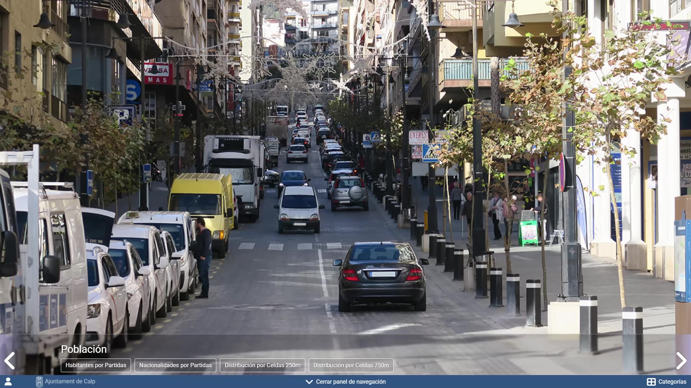

Directorio
Geoportales municipales
Cada geoportal publicado está en el dominio del ayuntamiento. Desde su portada se elige una temática o se entra al visor sin capas activas. Este listado no incluye instancias en implantación.
-


Altea
geoportal.altea.es — se abre en una ventana nueva
-


Calp
geoportal.calp.es — se abre en una ventana nueva
-


Teulada Moraira
geoportal.teuladamoraira.org — se abre en una ventana nueva
No hay un geoportal publicado con ese nombre. Puede usar el visor de capas públicas o consultar a Geonet.
Si su ayuntamiento ya trabaja con GeoGIS y el geoportal no aparece aquí, es probable que aún no esté publicado en el dominio municipal. Mientras tanto, la consulta de información de dominio público está en visor.geonet.es.